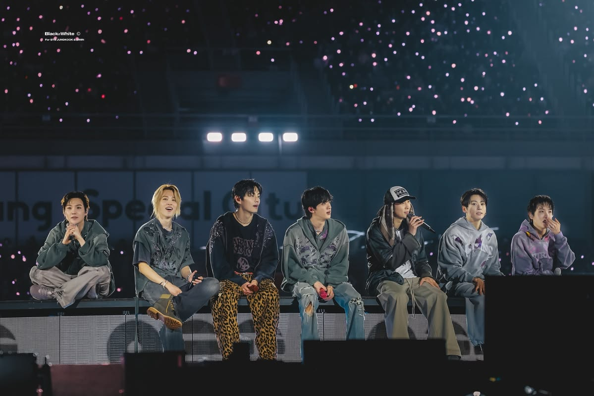

About KFanverse
KFanverse is a K-pop fan community platform designed to connect fans through updates, quizzes, discussions, and merchandise exploration.
Your K-pop universe all in one place
KFanverse is a fan-centered website proposal created to provide K-pop fans with a fun and interactive online space. The platform allows users to stay updated with K-pop news, participate in quizzes, engage in fandom discussions, and browse featured merchandise in one organized community.
The goal of KFanverse is to create a welcoming environment where fans can express themselves, connect with fellow fans, and enjoy different entertainment features inspired by modern fandom culture.

Updates
Stay informed with comeback announcements, trending topics, performances, and fandom news.
Quizzes
Test your K-pop knowledge through interactive quizzes about artists, groups, songs, and generations.
Discussions
Join conversations, share opinions, and participate in community discussions with fellow fans.
Merchandise
Explore albums, collectibles, lightsticks, and other K-pop merchandise through a stylish browsing experience.
Mission
To provide K-pop fans with an engaging and interactive digital platform that encourages community participation and fandom expression.
Vision
To become a creative and welcoming fan-centered platform that connects K-pop communities worldwide.